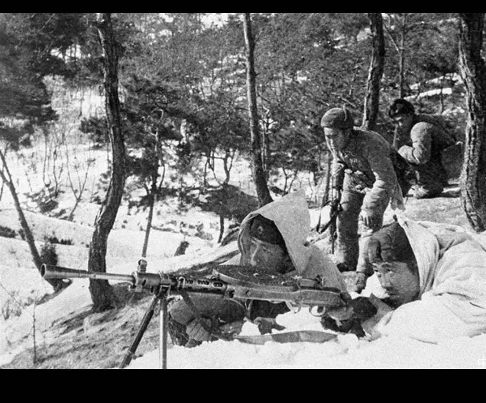

长津湖战役
“我们可以在圣诞节之前结束这场战争。”……

1950年11月27日至12月24日，中国人民志愿军第9兵团与美国第10军爆发了一场著名的且极度惨烈的战斗，大 战发生的地点在朝鲜半岛东北部的长津湖地区，战争的结局是中国人民志愿军取得胜利，而麦克阿瑟的战争计划彻底 破灭。这是一场战争双方都感到惨痛的战役，长津湖零下四十度的高温低温中，生命是如此的脆弱，战争是如此的残酷。 在长津湖战役爆发的不久前，联合国军总司令麦克阿瑟说出了自己的名言：“我们可以在圣诞节之前结束这场战争。 ”麦克阿瑟的自信来源于数月以来的战争十分顺利，美军距离占领朝鲜全境只有一步之遥，麦克阿瑟计划在11月23日之 前完成自己宏伟的计划。但是他的计划很快遭遇重创，因为就在十月下旬，中国人民志愿军入朝了，双方之间的第一次 交锋就让美军吃了亏，也阻止了麦克阿瑟的计划。面对新的对手，麦克阿瑟决定来一次更大的攻势，他不相信自己战胜 不了中国军队。1950年11月7日，麦克阿瑟指挥联合国军由东西两条战线向中朝边境开始进行试探性进攻，而志愿军方 面则决定将计就计，请君入瓮。在东线，第42军负责且战且退，逐步按照计划将美军陆战一师及步兵第七师引诱到长津 湖地区，西线则由宋时轮派出的小股部队将“联合国军”引诱到清川江一带。志愿军的“退却”让麦克阿瑟的信心膨胀了， 他决定立即发动“圣诞节攻势”，毕其功于一役。长津湖成为了风暴中心。

在长津湖，中美双方投入的都是自己的王牌部队，但是当志愿军开始作战计划的时候，他们遭遇到了严峻的问题， 严寒、饥饿……这些问题得不到解决，由于前期准备不足，很多战士身上只有一件旧棉衣，物资方面，美军丧心病狂地 切断了所有运输线，我们也没有制空权，这导致志愿军从一开始便比美军多了几分劣势。可是战争不会因为志愿军条 件困难而推迟，不能再拖了，11月27日，在宋时轮的指挥下，中国人民志愿军第九兵团吹起了大战的号角。很快，美 军的防线被志愿军切成了四段，首尾不能相顾，可是美军尽管存在着种种战略失误，却有着装备上的巨大优势。美国 步兵七师很快调集了大量的坦克与装甲车发动了反击，同时呼叫了密集的空中支援，美军强大的火力让志愿军难以前行， 经过一天一夜的激战，双方都很难扩大战果，长津湖的高地上布满了碎尸，血液融进白雪之中，顺着高坡流下来，又在 半空冻成可怖的血柱。但是战争还没有结束，除非传来停战的命令，否则双方将永远厮杀下去，直到决出胜负，最开始 的时候，美军觉得自己一定会赢，可是当战争进入中期，他们的信心开始动摇了，志愿军似乎永远都有战斗力，有时候 一个连队牺牲到只剩下一个战士，他们也会继续战斗。他们什么都不怕，坦克、飞机都不能阻挡他们进攻的脚步。 11月29日，麦克阿瑟第一次下令撤离，他决定转移目标，进攻古土里。但是他的战略意图并没有瞒过志愿军的眼睛， 很快，志愿军第二次对敌人进行包围，新的战斗开始了，长津湖战役还没有结束。12月2日，志愿军全歼被围困的美国 步兵七师，北极熊团团长麦克莱恩被我军击毙，美国陆军步兵第七师第 31 团级战斗群被全歼，这也是抗美援朝战争中 志愿军第一次，也是唯一一次成建制全歼美军团级以上作战单位的战例。12月6日，美军开始全线后撤，在美军的战争历 史中 这样被对手追着打的经历为数不多，考虑到战争双方硬实力的客观差距，美军的溃逃显得更加惨烈，但是现在大部 分美军已经不想思考更多了，他们只想赶紧离开这个鬼地方，他们赢不了的，尽管战前他们信心十足，可是现在他们死了 太多的人了，军队的信心正在一步步的崩溃，与之相反的是始终保持着战斗意志的志愿军。从美军的崩溃开始，胜利的天 平倒向了志愿军一方。